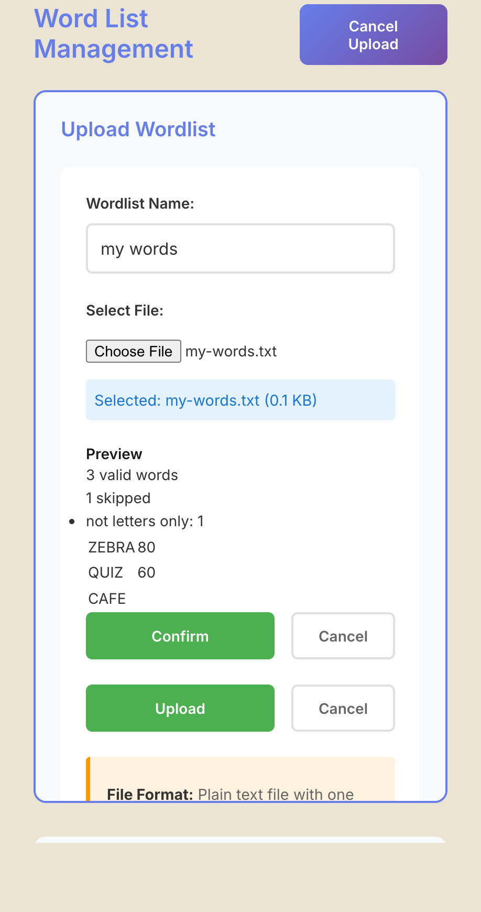

Use your own word lists
Goal
Add a word list of your own, check how the app reads it before you commit to it, and choose it in Search and Autofill. Use this when the shipped list lacks words you want, such as names or topic vocabulary.
Prerequisites
- The app is running (Install on macOS), started from the project folder.
- A plain text file with your words.
Steps
1. Prepare the file
Put one entry per line. Each line can be a bare word, a word with a score after a semicolon, or a word with a score after a comma:
# my list (blank lines and lines starting with # are ignored)
ZEBRA;80
quiz,60
CAFÉ
The full rules (letters A-Z only, accents folded, 3 to 21 letters, scores, duplicates) are in File formats. The upload preview tells you how many lines were skipped and why, so you can fix the file before you confirm.
2. Upload it in the app
- Open the Lists tool in the left rail.
- Click
Upload Wordlist. - Type a name in
Wordlist Name:and choose the file withSelect File:. - Click
Upload. Nothing is stored yet: the app shows aPreviewwith the number of valid words, the number skipped with the reason for each kind, and the first words with their scores. - Click
Confirmto store the list, orCancelto throw the preview away.


If the preview finds no valid words, the app refuses the upload and reports why.
The list is stored as a text file under data/wordlists/custom/ in the project folder. unverified Uploading under the
name of an existing custom list appears from the code to add the new words to that list rather than replace
it, and the list's displayed name may be the name you typed with underscores shown as spaces; neither was run
for this page.
3. Use it
- Autofill: tick it under Custom in the Word Lists section. A ticked custom list shows a
Priority theme listchoice; select it and the fill prefers words from that list (Autofill a grid). Note thatVerify wordsandClean gridcheck only the shippedComprehensive Dictionary, so words that exist only in your list are flagged as invalid (Check and clean a grid).
4. Change or remove a custom list
Select the list in the Lists tool. Add Words opens a box (Enter words (one per line)) that you submit with
Add Words to List, and Show Stats shows its size and letter statistics. The delete button asks, in a browser
dialog, Delete wordlist "custom/<name>"? This cannot be undone.
The shipped lists are read-only. The app refuses to overwrite or delete them and tells you to create a custom list instead.
Final Result
Your list appears in Search and in Autofill's Word Lists, and a search for a pattern that your words fit returns them with your list's file name shown as the source.
Next Steps
- The word list file format: File formats.
- Put your own theme entries into the grid: Add theme words.